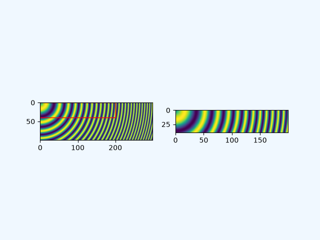
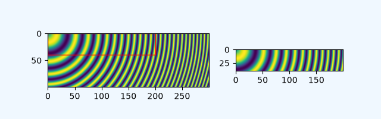
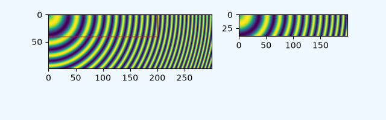
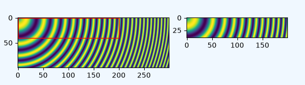

Note
Go to the end to download the full example code.
Placing images, preserving relative sizes#
By default Matplotlib resamples images created with imshow to
fit inside the parent Axes. This can mean that images that have very
different original sizes can end up appearing similar in size.
This example shows how to keep the images the same relative size, or how to make the images keep exactly the same pixels as the original data.
Preserving relative sizes#
By default the two images are made a similar size, despite one being 1.5 times the width of the other:
import matplotlib.pyplot as plt
import numpy as np
import matplotlib.patches as mpatches
# make the data:
N = 450
x = np.arange(N) / N
y = np.arange(N) / N
X, Y = np.meshgrid(x, y)
R = np.sqrt(X**2 + Y**2)
f0 = 5
k = 100
a = np.sin(np.pi * 2 * (f0 * R + k * R**2 / 2))
A = a[:100, :300]
B = A[:40, :200]
# default layout: both axes have the same size
fig, axs = plt.subplots(1, 2, facecolor='aliceblue')
axs[0].imshow(A, vmin=-1, vmax=1)
axs[1].imshow(B, vmin=-1, vmax=1)
def annotate_rect(ax):
# add a rectangle that is the size of the B matrix
rect = mpatches.Rectangle((0, 0), 200, 40, linewidth=1,
edgecolor='r', facecolor='none')
ax.add_patch(rect)
return rect
annotate_rect(axs[0])

Note that both images have an aspect ratio of 1 (i.e. pixels are square), but pixels sizes differ because the images are scaled to the same width.
If the size of the images are amenable, we can preserve the relative sizes of two images by using either the width_ratio or height_ratio of the subplots. Which one you use depends on the shape of the image and the size of the figure. We can control the relative sizes using the width_ratios argument if the images are wider than they are tall and shown side by side, as is the case here.
While we are making changes, let us also make the aspect ratio of the figure closer
to the aspect ratio of the axes using figsize so that the figure does not have so
much white space. Note that you could alternatively trim extra blank space when
saving a figure by passing bbox_inches="tight" to savefig.

Given that the data subsample is in the upper left of the larger image,
it might make sense if the top of the smaller Axes aligned with the top of the larger.
This can be done manually by using set_anchor, and using "NW" (for
northwest).

Explicit placement#
The above approach with adjusting figsize and width_ratios does
not generalize well, because it needs manual parameter tuning, and
possibly even code changes to using height_ratios instead of
width_ratios depending on the aspects and layout of the images.
We can alternative calculate positions explicitly and place Axes at absolute
coordinates using add_axes. This takes the position in the form
[left bottom width height] and is in
figure coordinates. In the following, we
determine figure size and Axes positions so that one image data point
is rendered exactly to one figure pixel.
dpi = 100 # 100 pixels is one inch
# All variables from here are in pixels:
buffer = 0.35 * dpi # pixels
# Get the position of A axes
left = buffer
bottom = buffer
ny, nx = np.shape(A)
posA = [left, bottom, nx, ny]
# we know this is tallest, so we can already get the fig height (in pixels)
fig_height = bottom + ny + buffer
# place the B axes to the right of the A axes
left = left + nx + buffer
ny, nx = np.shape(B)
# align the bottom so that the top lines up with the top of the A axes:
bottom = fig_height - buffer - ny
posB = [left, bottom, nx, ny]
# now we can get the fig width (in pixels)
fig_width = left + nx + buffer
# figsize must be in inches:
fig = plt.figure(figsize=(fig_width / dpi, fig_height / dpi), facecolor='aliceblue')
# the position posA must be normalized by the figure width and height:
ax = fig.add_axes((posA[0] / fig_width, posA[1] / fig_height,
posA[2] / fig_width, posA[3] / fig_height))
ax.imshow(A, vmin=-1, vmax=1)
annotate_rect(ax)
ax = fig.add_axes((posB[0] / fig_width, posB[1] / fig_height,
posB[2] / fig_width, posB[3] / fig_height))
ax.imshow(B, vmin=-1, vmax=1)
plt.show()

Inspection of the image will show that it is exactly 3* 35 + 300 + 200 = 605 pixels wide, and 2 * 35 + 100 = 170 pixels high (or twice that if the 2x version is used by the browser instead). The images should be rendered with exactly 1 pixel per data point (or four, if 2x).
References
The use of the following functions, methods, classes and modules is shown in this example: